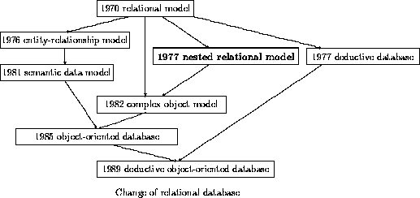

|
|
Welcome to Kappa's Homepage |
Japanese |
Kappa has adopted nested relation or NF2(Non-First-Normal-Form) as its data model, since we have to deal with complex data structure in KIPS, for example, molecular biological data which include hierarchy and repetition. Nested relation can store and process these complex data efficiently due to reduced number of relations and join operations.
Kappa's parallel distributed processing is expected to speed up searching exponentially growing databases.
The figure below shows the history of databases or data models starting
from the relational model. Numbers in the figure are the years of
proposal. (This figure is based on fig.3.8.2 of refered book 1.)
We can see that the nested relational model was proposed in relatively
early stages of the history.
Regarding the newest deductive object-oriented database, please see
Quixote's pages.
